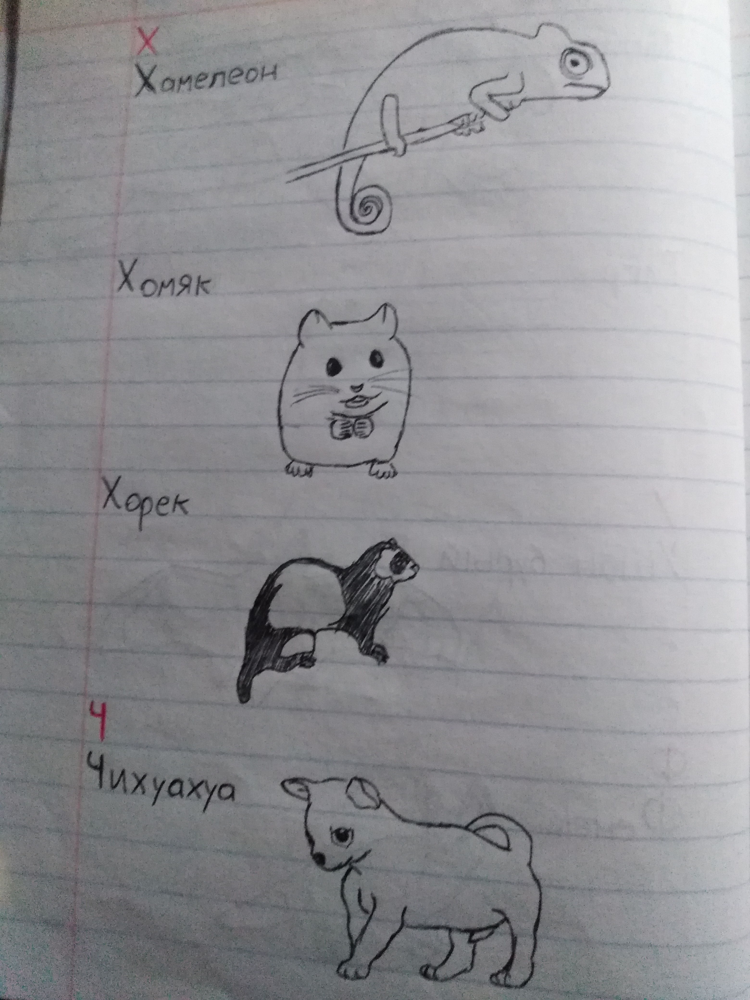
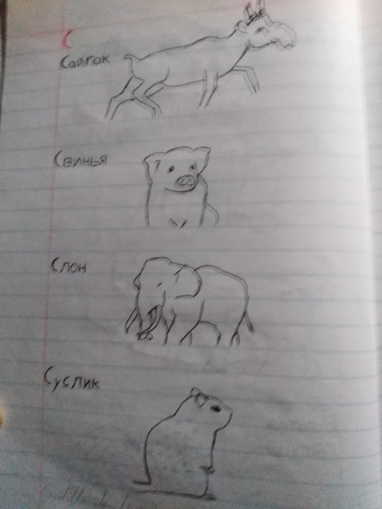
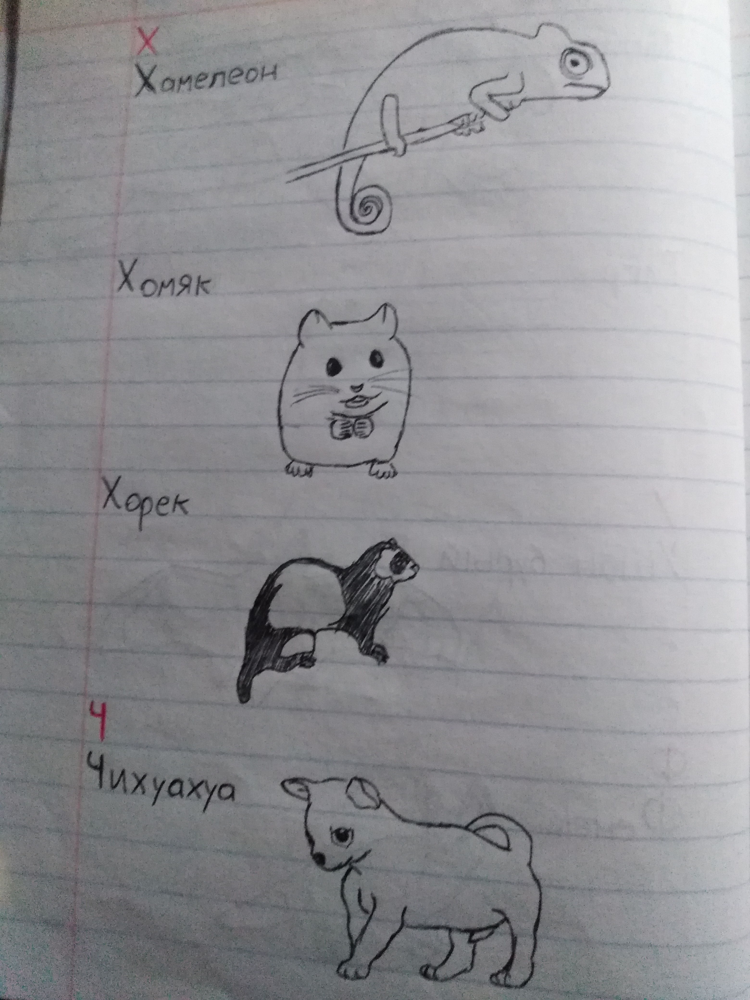
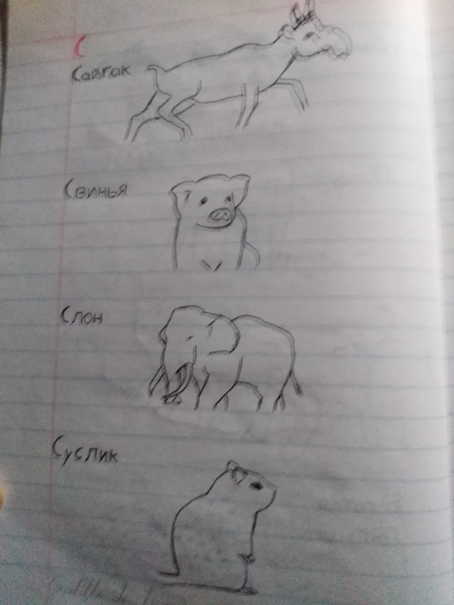

Learning Russian
Date:20/08/2020
The reason
Some experts in geopolitics say that in the coming years, the world will go from a world dominated by the US to one dominated by the three current superpowers: The US, Russia, and China.
So, I thought that it will be very useful to learn the language of those three superpowers in the future, as it happend with english when the US started to basically rule the world. So, I started to learn russian.
Before learning russian, I started to take pressential chinese classes, but it became inconvenient. I was wasting a lot of time going and coming from there; and once, the teacher told us that those classes were not enough to learn chinese.
I decided that, if I was going to learn a new language it would be by myself. But chinese was a little bit complicated, so I choosed Russian this time.
The begining
Doing research about how to learn a new language, I realized that there were better methods to learn a language than trying to learn about the gramatics. Instead, there’s something called “Comprehensible input” wich basically consists on listening the target language in a way that you can understand it (not necessarly everything at the start) without the need of subtitles in your mother language or something like that.
An exaple of this could be that an apple appears on the screen, an then you listen the word for “apple” in the target language, or someone doing something and then, the word for the action in the target languge. Stuff like that.
In the first week, almost everything I studied was not about Russian language, but abowt how to learn languages in general.
Then, I started watching comprehensible input on YoTube. In fact, the tool I use the most for learning is YouTube, and this would be no exeption.
After some videos, I realized that it was very hard to catch up the pronunciation of words, an with that, the ability to search them individually. So I decided to learn the russian alphabet and it’s pronunciation before continuing, and it was woth it.
To learn the alphabet, I took a notebook and sarted drawing animals and it’s name in alphabetic order. I did this because I like animals and living stuff in general, so I would memorize better the letters and it’s pronunciation if I had a good reason to.
The russian alphabet has 33 letters, but I draw more than that. Here some of my drawings:
 




The next
Now I continue to watch comprehensible input videos, and Iv’e aquired a lot of vocavulary that way. I´ve learned for example, the numbers, parts of ahouse, and very much other stuff.
Also I’ll hand-write some songs that I like, to learn the lyrics and the meaning while I have fun listening and singing those songs.
While my research about how to learn a language, one of the best advices I found was that it have to be fun, because learning a language, like life itself, is not a race, but instead, is a maraton that really never ends.